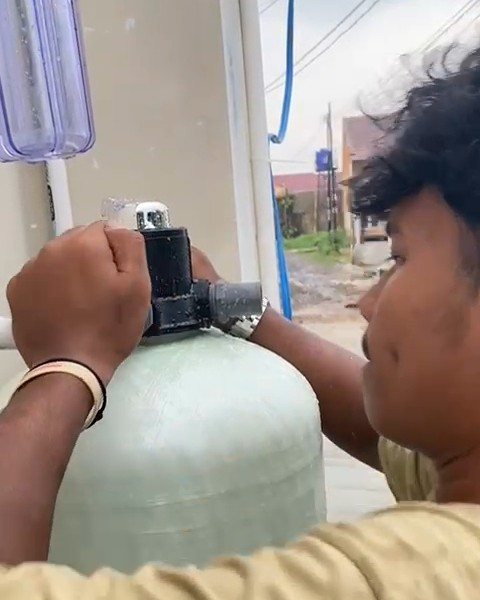
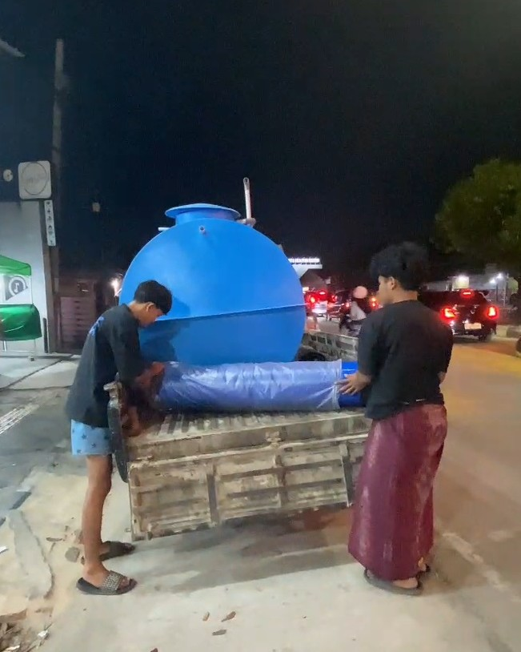
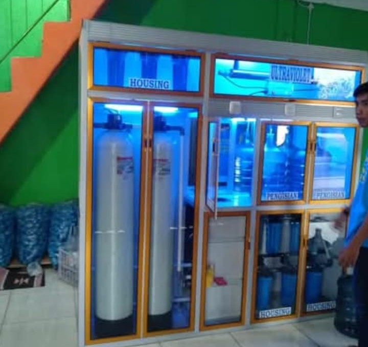
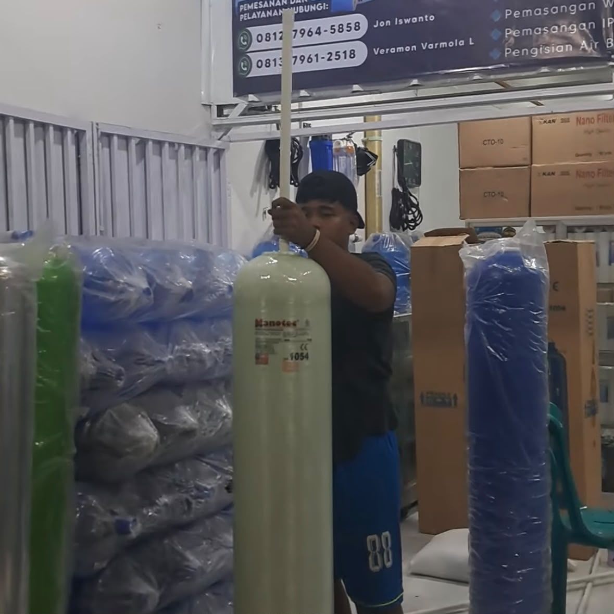
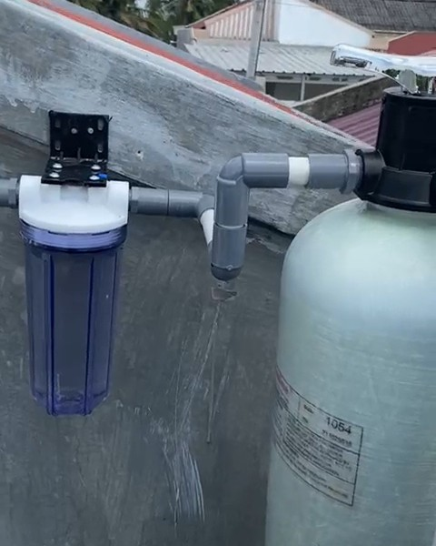

Galeri Proyek
Portofolio Pemasangan & Bukti Nyata
Dokumentasi hasil pengerjaan Instalasi Depot Air Minum, Filter Air Rumah Tangga, hingga proyek Water Treatment Plant (WTP) di berbagai wilayah Provinsi Lampung.






